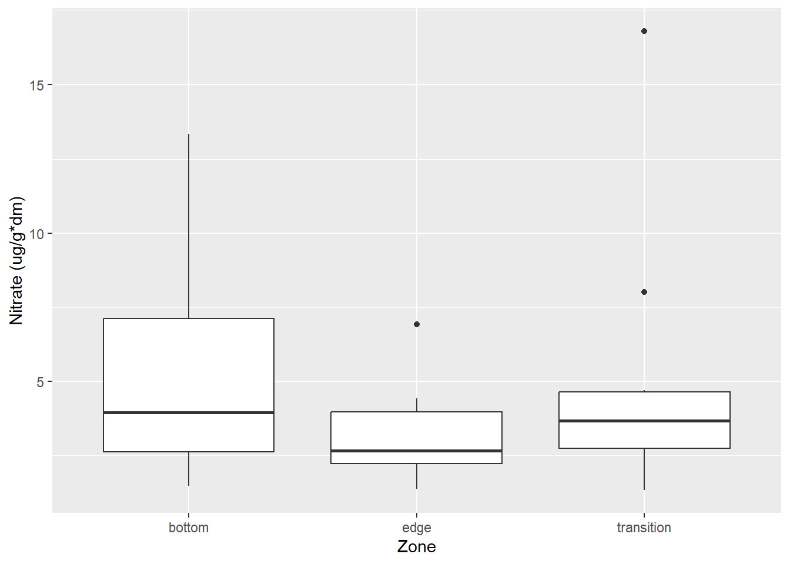
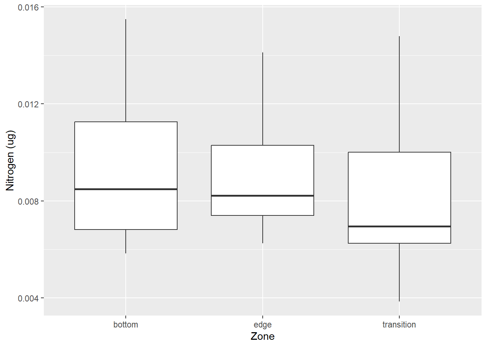
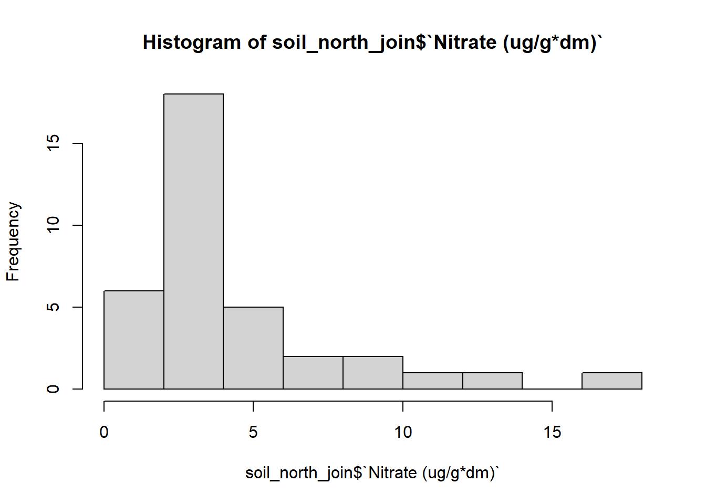
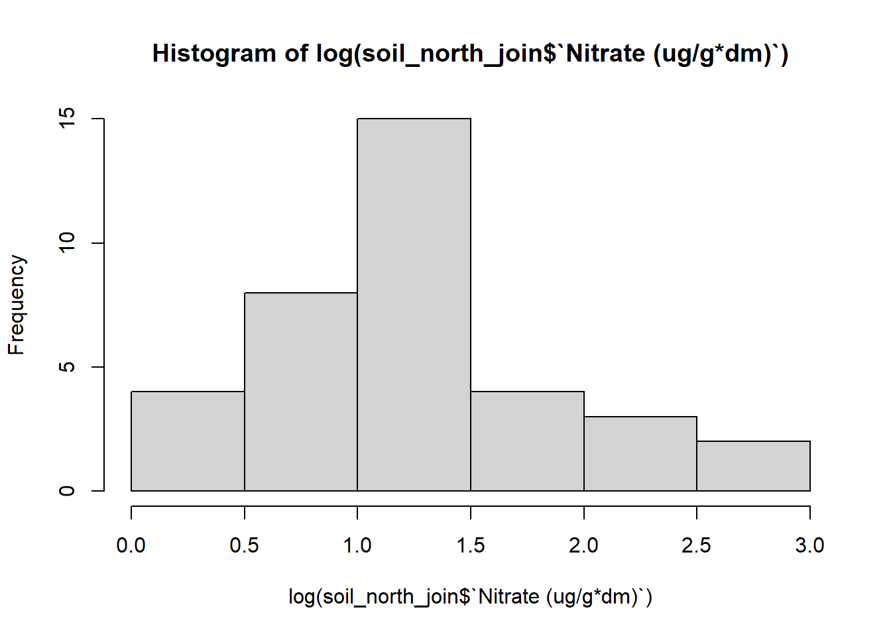
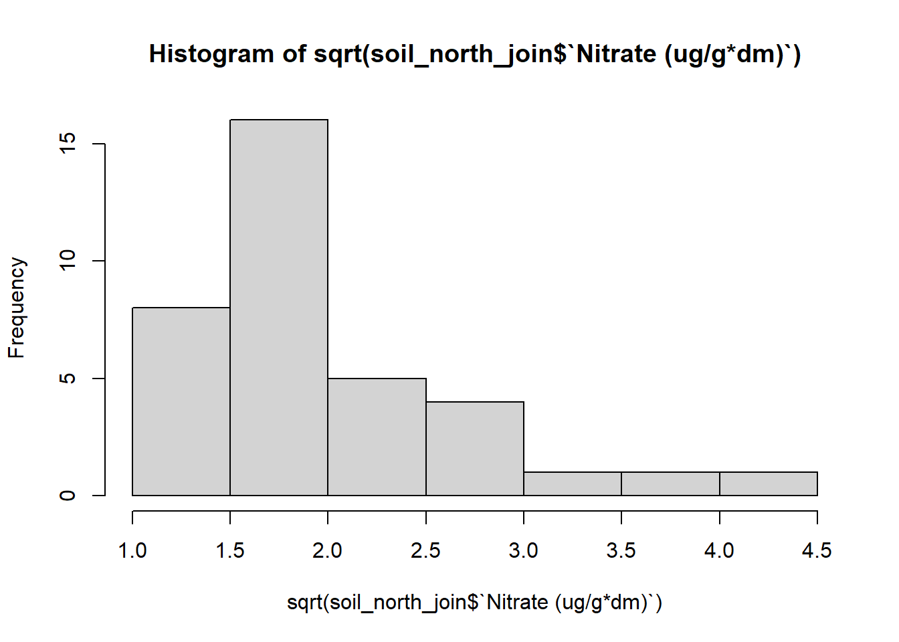
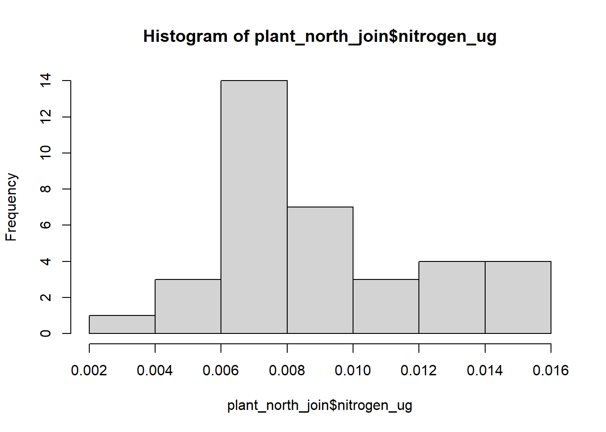
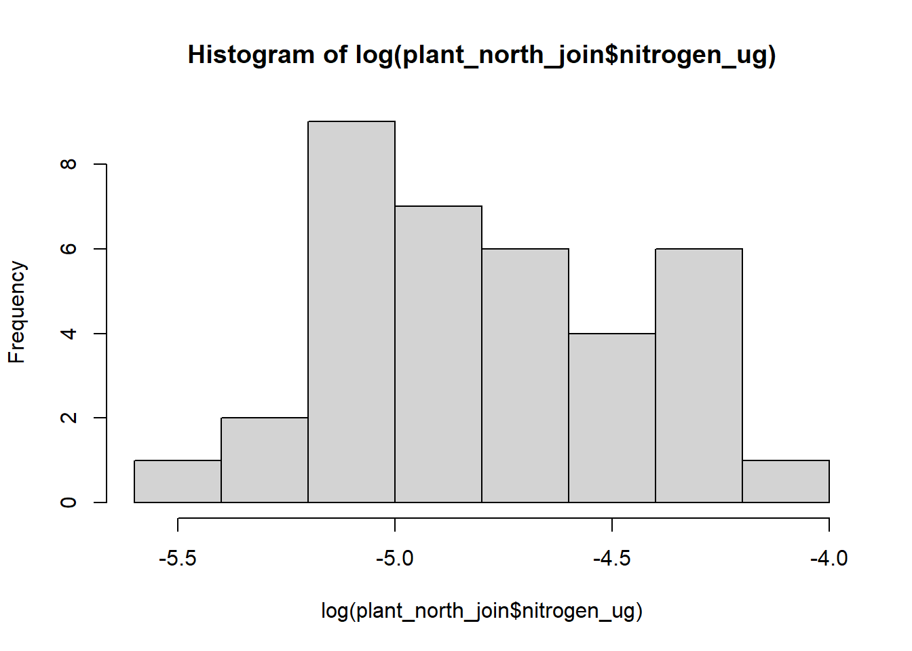
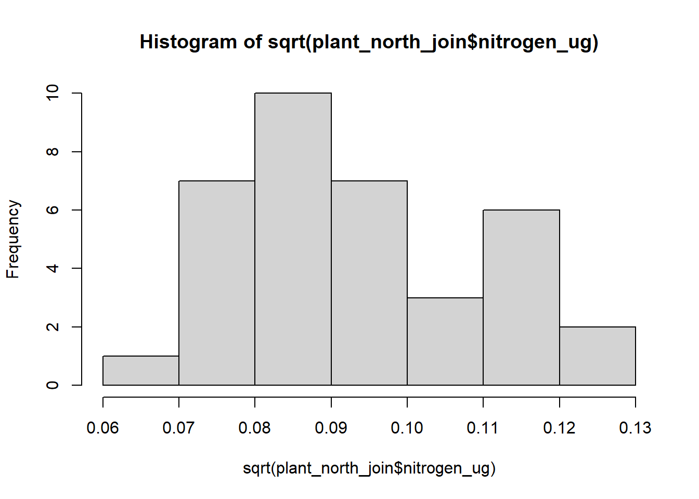
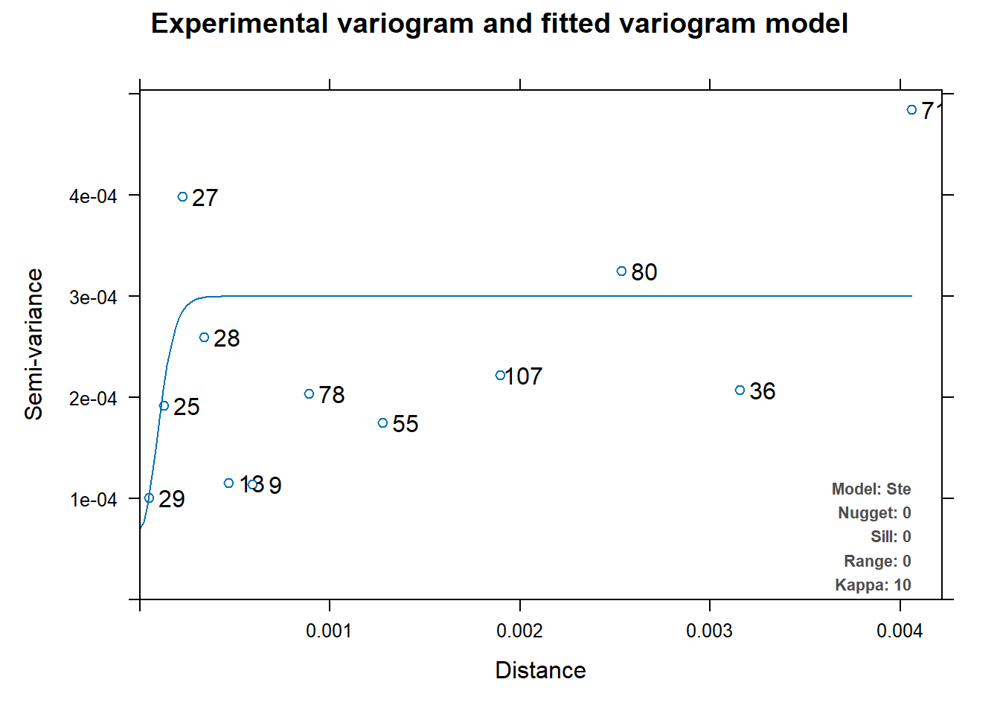

#import libraries
library(tidyverse)
library(ggpubr)
library(gstat)
library(sf)
library(automap)
library(patchwork)
library(viridis)
library(broom)
library(stargazer)
library(sjPlot)Overview
Nutrients are the essential bases for plant to be able to grow. Nitrogen, phosphorus, and potassium are a few of the necessary nutrients that plants need in order to survive. The issue is when too much of these nutrients are inputted into the environment. This threatens the ecosystem such as trophic levels, increase of invasive species, and increase disease (Kneitel and Lessin 2010). One particular ecosystem, vernal pools are more sensitive to these changes. Vernal pools are seasonal wetlands, meaning they are full of water during the winter season and are empty and dry during the summer season. About 90% of wetlands have been lost from urban planning and the expansion of infrastructure in these location.
One of the issues with urban expansion is the changes in natural drainage in locations that include vernal pools in these areas. Runoff may be increasing or decreasing the amount of water that end up in these pools. One other concern is that vernal pools that are close to urban location may have an increase concentration of nutrients. One of the reasoning is that it is collecting the nutrients from nearby yards with a constant application of an influx of nutrients.
Before, I had done a small project concerning the nitrogen concentration found in plant and soil matter. My hypothesis looked at vernal pool’s proximity to urban spaces and the amount of nitrate as well as ammonium concentrations in these pools and how that affected the amount of nonnative plant percent cover in these areas. I had theorized that the vernal pools that were close or even had a direct pipe of runoff into these pools had an increase amount of nitrate and ammonium concentrations in it. These were the relationships as well as the hypothesis that I came up with: - Overall, the relationship between nonnative percent cover and nutrients were as followed:
\[\text{Nonnative Percent Cover} = \beta_0 + \beta_1 \text{nutrients} + \epsilon\]
To refine this equation to my project’s goals, I rearranged the equation to include nitrate and ammonium concentration depending on if they came from plant matter or soil matter: \[\text{Nonnative Percent Cover} = \beta_0 + \beta_1 \text{nitrate and ammonium conc. soil} + \epsilon\] as well as \[\text{Nonnative Percent Cover} = \beta_0 + \beta_1 \text{nitrogen conc. plant} + \epsilon\]
My hypothesis testing included the general syntax that I used when statistically analyzing my data:
\[H_{0}: \mu_{Nonnative plant cover} - \mu_{Native plant cover} = 0\]
\[H_{A}: \mu_{Nonnative plant cover} - \mu_{Native plant cover} \neq 0\]
In this project, I was not able to find a definitive relationship between the nitrogen concentration and nonnative plant cover in my original analysis.
However, for this blog, I am going to take a step back and see if there are any interesting trends inside my data. For this analysis, I am going to look if there is a relationship between the location of where the samples were located and if that impacts the amount of nitrogen concentration at those areas. Since I am taking a step back for this analysis, I’ll be looking at nutrients relating to nitrogen. In this case, I’ll be looking at nitrogen concentrations for plant matter and nitrate concentrations for soil matter.
As mentioned above, vernal pools are a sensitive ecosystem. Unfortunately, as there are only such few number left from its original amount, limited research has been done on these ecosystems. Few research papers have been published that cover the nutrient concentration in vernal pools and instead cover wetlands as a whole. One paper, “Litter breakdown among intermittently connected and unconnected geographically isolated Wetlands: how nutrient inputs alter wetland function”(Smith et al. 2022) talks about the impact increased nutrients can have on the breakdown on litter. This brings up a certain questions: does litter decomposition happen at a more rapid pace depending on if the litter is at the edge of the pool or at the center of the pool?
Data Visualization
Before doing some data visualizations, I’ll go ahead and read in the libraries I need in order to properly do my analysis.
Let’s go ahead and load in the datasets that we will be using.
north_parcel <- read_csv("data/np_pc.csv")
nitrogen_soil <- read_csv("data/Nitrogen_soil_5.csv")
nitrogen_plant <- read_csv("data/Nitrogen_plant (5).csv")Before doing some data visualization, I need to clean up the columns and combine them to get a simplified dataset to work with. I’ve simplified the columns and combined them with another dataset that contained the coordinates of where I got my samples.
#join soil dataset and north parcel dataset together
#tidy up north_parcel dataset to have information that is relevent
north_parcel_clean <- north_parcel %>%
dplyr::select(`ObjectID`,
`Vernal Pool Name or Number`,
`Vernal Pool Zone`,
`Transect Distance of Quadrat`,
x,
y) %>%
rename(Pool = `Vernal Pool Name or Number`,
Zone = `Vernal Pool Zone`,
Distance = `Transect Distance of Quadrat`)
#replace the NA value with edge to complete the dataframe
north_parcel_clean$Zone[43] <- "edge"
#tidy up nitrogen_soil dataset
nitrogen_soil_clean <- nitrogen_soil %>%
mutate(Zone = ifelse(Zone == "E", "edge", Zone),
Zone = ifelse(Zone == "T", "transition", Zone),
Zone = ifelse(Zone == "M", "bottom", Zone)) %>%
select(-ObjectID)
# rename(nitrate_ug = `Nitrate (ug/g*dm)`)
#join north_parcel_clean with soil dataset
soil_north_join <- inner_join(nitrogen_soil_clean, north_parcel_clean, by = c('Pool', 'Zone', 'Distance'))
#join nitrogen plant and north parcel dataset together
#tidy up nitrogen_soil dataset
nitrogen_plant_clean <- nitrogen_plant %>%
mutate(Zone = ifelse(Zone == "E", "edge", Zone),
Zone = ifelse(Zone == "T", "transition", Zone),
Zone = ifelse(Zone == "M", "bottom", Zone)) %>%
rename(nitrogen_ug = nitrogen)
#rename incorrect item names to correct name in nitrogen_plant dataset
nitrogen_plant_clean$Pool[32:36] <- "PH1"
#join north_parcel_clean with soil dataset
plant_north_join <- inner_join(nitrogen_plant_clean, north_parcel_clean, by = c('Pool', 'Zone', 'Distance'))Now that I have two datasets including data that I am interested in, I’ll go ahead and do some visualization to what types of statistical tests I want to run. I’ll first plot the two graphs, each relating to soil and plant and see what types of trends appear in these graphs.
#for soil graph
ggplot(data = soil_north_join, aes(y = `Nitrate (ug/g*dm)`, x = Zone)) +
geom_boxplot() +
labs(y = "Nitrate (ug/g*dm)",
x = "Zone")
#for plant graph
ggplot(data = plant_north_join, aes(y = nitrogen_ug, x = Zone)) +
geom_boxplot() +
labs(y = "Nitrogen (ug)",
x = "Zone")
I’m also curious about the normality of the data. I’ll go ahead and plot a histogram to see if the data is normally distributed for the soil data first.
#check for normality by plotting histogram to see distribution:
#soil
hist(soil_north_join$`Nitrate (ug/g*dm)`)
The histogram for the soil samples looks as if the data is not normally distributed. It looks to be right tailed skewed. I’ll have to transform the data to see if I can get a more accurate normally distributed histogram.
#plot histogram of transformed data
#log data
hist(log(soil_north_join$`Nitrate (ug/g*dm)`))
#squared data
hist(sqrt(soil_north_join$`Nitrate (ug/g*dm)`))
#add another column for log transformed data on dataset
soil_north_join$log_nitrate <- log(soil_north_join$`Nitrate (ug/g*dm)`)Viewing the histograms of my transformed data, it seems that the log transformed data is distributed most normally. I’ll go ahead and use the log transformed data to do my analysis.
Let’s also go ahead and view the distribution for the plant data. I’ll also plot a histogram to see how the data is distributed. I’ll also transform the data in the same cell to see how it changes the distribution.
#check for normality by plotting histogram to see distribution:
#plant
hist(plant_north_join$nitrogen_ug)
#log data
hist(log(plant_north_join$nitrogen_ug))
#squared data
hist(sqrt(plant_north_join$nitrogen_ug))
#add another column for squared transformed data on dataset
plant_north_join$sqrt_nitrogen <- sqrt(plant_north_join$nitrogen_ug)It is hard to tell which data looks normally distributed between the three different types of histogram. For this analysis, I’ll go ahead and use the squared transformed data as that seems to be closest to a normally distributed histogram.
Analysis plan
From my preliminary analysis of the data, I have decided to do three types of statistical analysis:
- Linear regression Analysis
- From the analysis of the plots, it looks like there is some sort of pattern in terms of the plant data. I would like to see if there is any difference between the 3 sites and see how much the sites can explain the nitrogen concentration found in vernal pools as a whole.
2, Hypothesis testing
- Looking at the histogram results, it would be interesting to see how significant my results are and if there is conclusive evidence about if different parts of a vernal pool houses a certain concentration amount of nitrogen.
- Spatial statistics
- As I have geographical points for this data, it would be interesting to see the nitrogen concentrations throughout the whole field site. I would be using Kriging in order to predict the nitrogen levels and use that data to plot on a map to visualize the nitrogen concentrations throughout the field site.
Limitations:
A main limitation of this study is the small sample size. In total, there was around 80 samples that I was able to use my analysis on. As seen later in this blog, almost all my results were outputted as insignificant. If this analysis were to be done again, it would be nice to look at a big amount of samples to get a more accurate picture of the field and the analysis that followed.
Statistical summary
- Linear regression Analysis
I’ll first run my soil linear regression to see how different the zones are from one another.
| log nitrate | |||
| Predictors | Estimates | CI | p |
| (Intercept) | 1.43 | 1.06 – 1.79 | <0.001 |
| Zone [edge] | -0.36 | -0.87 – 0.16 | 0.171 |
| Zone [transition] | -0.10 | -0.62 – 0.42 | 0.693 |
| Observations | 36 | ||
| R2 / R2 adjusted | 0.059 / 0.002 | ||
From our summary table, we can see that there may be a difference in nitrogen concentrations depending on the zone from looking at the estimate coefficients. However, when looking at the R2 adjusted, our number that we get is 0.011. This is a very small number which we can interpret as amount of nitrogen concentrations we find can be explained by the location in a pool.
We’ll go ahead and look at our plant regression and see what summary we get
#plant linear regression analysis
linreg_plant <- lm(sqrt_nitrogen ~ Zone, data = plant_north_join)
tab_model(linreg_plant, CSS =list(css.depvarhead = '+color: red;',
css_theme("cells")))| sqrt nitrogen | |||
| Predictors | Estimates | CI | p |
| (Intercept) | 0.10 | 0.09 – 0.11 | <0.001 |
| Zone [edge] | -0.00 | -0.01 – 0.01 | 0.866 |
| Zone [transition] | -0.01 | -0.02 – 0.01 | 0.293 |
| Observations | 36 | ||
| R2 / R2 adjusted | 0.038 / -0.020 | ||
Here we can see that there is basically no difference in the nitrogen concentration depending on where you sample the plants. This would make sense as plants would absorb the same amount of nirogen depending on how much there was in the system in the first place.
Looking at these two analysis, I can conclude that location in a pool may not hold a threshold for a specific amount of nitrogen. In the next test, I’ll go ahead and still challenge that belief by testing my hypothesis
- Hypothesis testing
From what I am looking at, I’ll go ahead and test the following hypothesis:
\[H_{0}: \mu_{Edge conc.} = \mu_{Transition conc.} = \mu_{Middle conc.}\]
\[H_{A}: \mu_{Edge conc.} \neq \mu_{Transition conc.} \neq \mu_{Middle conc.}\]
In order to test my hypothesis, I’ll have to conduct an ANOVA test. An ANOVA test is done when you have 3 or more variable you are testing to one another to see if they are the same or different, as seen in my hypothesis above. For this, I’ll be conducting a one-way ANOVA test and see what p-values I get. Above, I have
#soil anova
nitrogen_soil_aov <- aov(log_nitrate ~ Zone, data = soil_north_join)
tab_model(nitrogen_soil_aov, CSS =list(css.depvarhead = '+color: red;',
css_theme("cells")))| log nitrate | |
| Predictors | p |
| Zone | 0.365 |
| Residuals | |
| Observations | 36 |
| R2 / R2 adjusted | 0.059 / 0.002 |
#plant anova
nitrogen_plant_aov <- aov(sqrt_nitrogen ~ Zone, data = plant_north_join)
tab_model(nitrogen_plant_aov, CSS =list(css.depvarhead = '+color: red;',
css_theme("cells")))| sqrt nitrogen | |
| Predictors | p |
| Zone | 0.524 |
| Residuals | |
| Observations | 36 |
| R2 / R2 adjusted | 0.038 / -0.020 |
Looking at the p-values, it is clear there is no significance between the zones and nitrogen concentrations as the p-values from both tests is much higher than 0.05. From this information, I conclude that I fail to reject the null hypothesis.
- Spatial Analysis
While the first two results were clear signs that location does not have an impact on nitrogen concentration, I am still curious about the predicted locations of levels on nitrogen concentration throughout the study site. I’ll go ahead and try kriging my results to see what the model predicts.
#convert dataset coordinates to sf
plant_conc_sf <- st_as_sf(plant_north_join, coords = c("x", "y"), crs = 3310) %>% #crs is for california
cbind(st_coordinates(.))
#create an auto fit variogram
v_mod_full <- automap::autofitVariogram(sqrt_nitrogen~1, plant_conc_sf)
#plot variogram
plot(v_mod_full)
#convert dataset coordinates to sf
soil_conc_sf <- st_as_sf(soil_north_join, coords = c("x", "y"), crs = 3310) %>% #crs is for california
cbind(st_coordinates(.))
#create an auto fit variogram
v_mod_full <- automap::autofitVariogram(sqrt_nitrogen~1, plant_conc_sf)
#plot variogram
plot(v_mod_full)
Looking only at the two variograms for both soil and plant, I can conclude that kriging, if done, will not be accurate. This is because for both graphs, the range and the variance are very small numbers. Even if I was able to make a Krigine model, I would not be confident in the prediction model that was given to me.
Next steps
If I was able to improve on this study, I would have gotten many more data points. A sample size of 80 is much too small and leaves room for lots of error with outliers completely skewing the analysis. A bigger sample size would make me feel more confident in my results that I obtain. It would also overpower any outliers there are in the data as well.
Side notes
All analysis can be found here as well as the data used.
Data Access note: All the data used here in this analysis is data that I have collected. Data can be publicly accessed through my github repository linked above. If used, please cite properly.
References
Kneitel, Jamie M., and Carrie L. Lessin. 2010. “Ecosystem-Phase Interactions: Aquatic Eutrophication Decreases Terrestrial Plant Diversity in California Vernal Pools.” Oecologia 163 (2): 461–69. https://doi.org/10.1007/s00442-009-1529-0.
Smith, Chelsea R., Stephen W. Golladay, Carla L. Atkinson, and Brian A. Clayton. 2022. “Litter Breakdown Among Intermittently Connected and Unconnected Geographically Isolated Wetlands: How Nutrient Inputs Alter Wetland Function.” Wetlands 42 (6): 57. https://doi.org/10.1007/s13157-022-01567-1.
Citation
BibTeX citation:
@online{park2023,
author = {Park, Patty},
title = {Statistically {Analysing} {Nitrogen} Concentration in
{Vernal} {Pools}},
date = {2023-12-15},
url = {https://p-park6.github.io/blog/2023-12-15-nitrogen-analysis/},
langid = {en}
}
For attribution, please cite this work as:
Park, Patty. 2023. “Statistically Analysing Nitrogen Concentration
in Vernal Pools.” December 15, 2023. https://p-park6.github.io/blog/2023-12-15-nitrogen-analysis/.